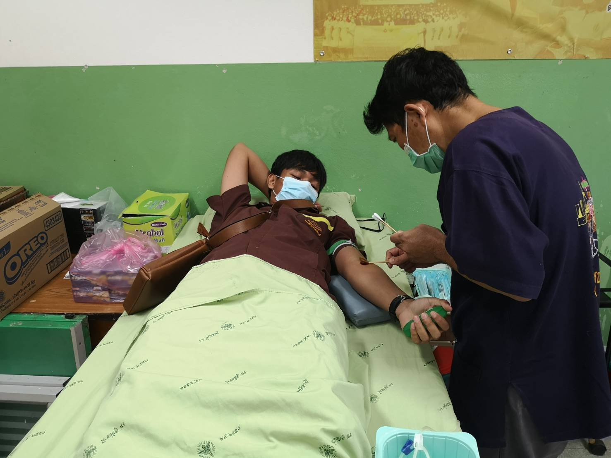

นำเสนอโครงงานเซนเซอร์ตรวจจับสิ่งกีดขวางเพื่อผู้พิการทางสายตา ในโครงการนวัตกรรมสิ่งประดิษฐ์ของคนรุ่นใหม่ ระดับปวช.
เซนเซอร์ตรวจจับสิ่งกีดขวางเพื่อผู้พิการทางสายตานั้น เป็นโปรเจกต์แบบกลุ่มที่ผมร่วมกันจัดทำขึ้นกับเพื่อนๆ ในระดับปวช. โดยตัวเซนเซอร์นั้น เป็นการพัฒนามาจากบอร์ด Arduino Ultrasonic Sensor Buzzer และถ่านแบตเตอรี่เป็นแหล่งจ่ายไฟ โดยมีการเขียนโปรแกรมชุดคำสั่งภาษา C ลงบอร์ด Arduino เพื่อให้เกิดการทำงานดังนี้ครับ โดยบอร์ดนั้น จะสั่งการให้เซนเซอร์ ทำการตรวจจับสิ่งกีดขวาง หากตรวจพบสิ่งกีดขวางที่มีระยะใกล้ในะดับ 50 เซนติเมตรลงไป ก็จะส่งข้อมูลกลับไปที่บอร์ด และตัวบอร์ดก็จะส่งข้อมูลไปที่ Buzzer ให้ส่งเสียงเตือนดังขึ้นครับ นอกจากนั้น ยังเซ็ตค่าให้ ฺ Buzzer ส่งเสียงเตือนด้วยความถี่ที่มากขึ้น หากเซนเซอร์เข้าใกล้สิ่งกีดขวางมากขึ้นด้วยครับ โปรเจกต์นี้เป็นโปรเจกต์ที่ทำขึ้นเป็นชิ้นงานครั้งแรกของผม และได้รับการประเมินในระดับดีมากจากผู้เชี่ยวชาญ ทำให้ผมดีใจมากครับ แม้ตัวเซนเซอร์นี้จะยังมีจุดที่บกพร่องบ้าง คือความเสถียรของเซนเซอร์ยังไม่แน่นอนมาก แต่นี่ก็เป็นชิ้นงานที่จุดประกาย และตอกย้ำให้ผมอยากจะเรียนรู้ทางด้านคอมพิวเตอร์และเทคโนโลยีให้มากยิ่งขึ้นกว่านี้ครับ
ฝึกประสบการณ์วิชาชีพ ปวช. ระยะเวลา 18 สัปดาห์ ณ ที่ว่าการอำเภอบ้านไร่ ในตำแหน่งพนักงานทั่วไป ฝ่ายงานความมั่นคง
ในการฝึกประสบการณ์วิชาชีพระดับ ปวช. ผมได้มีโอกาสเข้าฝึกงาน ณ ที่ว่าการอำเภอบ้านไร่ ในตำแหน่งพนักงานทั่วไป ฝ่ายงานความมั่นคง โดยในการฝึกงานครั้งนี้ มีหน้าที่และงานต่างๆ ที่ผมได้รับมอยหมายมากมาย ทั้งงานเอกสาร งานออกแบบ งานบริการ นอกจากจะได้รับความรู้และประสบการณ์จากงานที่ได้รับมอบหมาย ผมยังได้เรียนรู้รับบงานต่างๆ ของราชการ เช่น ลำดับขั้นตอนต่างๆ หน้าที่ของฝ่ายต่างๆ ในที่ว่าการอำเภอ ระเบียบต่างๆ ของราชการ เป็นต้น ซึ่งการฝึกประสบการณ์วิชาชีพครั้งนี้ ทำให้ผมได้เรียนรู้อะไรใหม่ๆ ที่อยู่ใกล้ตัวมากกว่าที่คิด และรู้สึกเติบโตขึ้นจากการได้รับมอบหมายงานและได้รับผิดชอบงานต่างๆ ครับ

ฝึกประสบการณ์วิชาชีพ ปวส. ระยะเวลา 18 สัปดาห์ ณ บริษัท แอดไวซ์ จำกัด สาขาบ้านไร่ ในตำแหน่งช่างซ่อมบำรุงอุปกรณ์คอมพิวเตอร์
ในการฝึกประสบการณ์วิชาชีพระดับ ปวส. ผมได้มีโอกาสเข้าฝึกงานกับบริษัท แอดไวซ์ จำกัด สาขาบ้านไร่ ในตำแหน่งช่างซ่อมบำรุงอุปกรณ์คอมพิวเตอร์ ในการฝึกประสบการณ์ครั้งนี้ ทำให้ผมได้รับความรู้และประสบการณ์ต่างๆ มากมาย และได้เพิ่มทักษะของตัวเองมากขึ้น เช่น การซ่อมแซมระบบปฏิบัติการ ระบบการทำงานของฮาร์ดแวร์ ฮาร์ดดิสก์ พาวเวอร์ซัพพลาย และอื่นๆ การซ่อมแซมเครื่องปริ้นรุ่นต่างๆ การเดินสาย LAN เป็นต้น รวมไปถึงได้เรียนรู้ระบบการทำงานของเอกชน การพูดคุยพบปะกับลูกค้า การบริการ การสื่อสาร ซึ่งสิ่งเหล่านี้คือสิ่งที่ผมได้รับจากการฝึกประสบการณ์วิชาชีพ และจะเป็นทักษะความรู้ที่ทำให้ผมได้นำไปใช้ต่อยอดความสามารถของตนเองยิ่งขึ้นต่อไปในอนาคตครับ
.JPG)
ได้รับเลือกเป็นนักศึกษาดีเด่น ของวิทยาลัยชุมชนอุทัยธานี จากสาขาวิชาเทคโนโลยีสารสนเทศ ปีการศึกษา 2567
ในกิจกรรมคุรุวันทามิ ประจำปีการศึกษา 2567 ผมได้รับการประกาศเกียรติคุณ เป็นนักศึกษาดีเด่นของวิทยาลัยชุมชนอุทัยธานี จากสาขาวิชาเทคโนโลยีสารสนเทศ อันเป็นผลมาจากการเข้าร่วมกิจกรรม และผลการเรียนดีเด่น โดยในปีการศึกษา 2566 ผมสามารถรักษาระดับเกรดเฉลี่ยให้อยู่ในระดับ 4.00 ได้ นับว่าเป็นความภาคภูมิใจของผม และรู้สึกเป็นเกียรติอย่างยิ่งครับ
ได้รางวัลชมเชยพิเศษจากกรรมการ ในการแข่งขันประกวดสิ่งประดิษฐ์ทางวิทยาศาสตร์ สัปดาห์วิทยาศาสตร์ วิทยาลัยชุมชนอุทัยธานี
ในงานสัปดาห์วิทยาศาตร์ ผมและเพื่อนๆ ได้ประยุกต์ความรู้ที่ได้จากเซนเซอร์ตรวจจับสิ่งกีดขวาง หลักการทำงานของ Ultrasonic ที่ได้จากการทำโปรเจกต์ มาประดิษฐ์เป็นเครื่องวัดระดับน้ำ โดยมีการจำลองติดเซนเซอร์ไว้บริเวณขอบถังน้ำ หากระดับน้ำเข้าใกล้ขอบบนของถัง ตัวเซนเซอร์ก็จะส่งเสียงแจ้งเตือนขึ้น ซึ่งสามารถนำไปต่อยอด การเปิด-ปิดน้ำอัตโนมัติได้ โดยเชื่อมการทำงานกับเซนเซอร์ และสุดท้ายก็ได้รับรางวัลชมเชยพิเศษจากกรรมการมาได้ เป็นอีกหนึ่งกิจกรรมที่สนุกและได้รับประสบการณ์ดีๆ ครับ

ร่วมกับเพื่อนๆ ศิษย์เก่าร่วมรุ่นเลี้ยงไอศกรีมรุ่นน้อง โรงเรียนวัดห้วยแห้ง
ผมและเพื่อนๆ รุ่นเดียวกัน ที่จบการศึกษาชั้นมัธยมศึกษาปีที่ 3 ด้วยกัน ได้รวมตัวกัน และร่วมกันซื้อไอศกรีมกะทิ จำนวน 2 ปั่น เพื่อเลี้ยงน้องๆ โรงเรียนวัดห้วยแห้ง การรวมตัวกับเพื่อนๆ ครั้งนี้ นอกจากเป็นการรวมตัวพบปะกันแล้ว ยังเป็นการร่วมกันทำสิ่งที่พวกเรารู้สึกอิ่มใจ อีกทั้งยังได้ถือโอกาสเข้าเยี่ยมคุณครูหลายๆ ท่านที่เคยสั่งสอนพวกเรามาอีกด้วย นับเป็นอีกกิจกกรรมที่ผมมีความสุข และรู้สึกดีที่ได้ลงมือทำครับ

ร่วมบริจาคเลือดกับสภากาชาดไทย เป็นประจำทุก ๆ 6 เดือน
นับตั้งแต่อายุถึงเกณฑ์ที่สามารถบริจาคเลือดได้ ผมก็ร่วบริจาคเลือดกับทาวสภากาชาดไทยมาโดยตลอด โดยผมจะออกกำลังกายด้วยการเล่นกีฬาอยู่เสมอ และเลือกทานอาหารที่บำรุงเลือด เพื่อให้ร่างกายพร้อมเสมอสำหรับการบริจาคเลือดๆ ทุกๆ 6 เดือนครับ
เข้าร่วมแข่งขันอัจฉริยภาพคณิตศาสตร์ การแข่งขันศิลปหัตถกรรมระดับชาติ ครั้งที่ 68 จังหวัดพะเยา
นี่อาจจะเป็นการแข่งขันที่ผ่านมานานแล้ว ตั้งแต่ผมอยู่ ม.2 แต่ก็เป็นกิจกรรมที่ผมให้ความสำคัญเสมอ และเป็นกิจกรรมที่ช่วยยืนยันกับตัวเอง ว่าผมอาจจะชอบการคำนวณมากกว่าที่คิด ผมได้เข้าแข่งขันอัจฉริยภาพทางคณิตศาสตร์ เป็นปีที่ 2 และสามารถเอาชนะในระดับจังหวัด และได้เข้าร่วมการแข่งขันระดับชาติได้สำเร็จ ก่อนจะทำได้อีกครั้ง ตอนที่ขึ้นชั้น ม.3 เป็นการแข่งระดับชาติที่ผมพยายามฝึกซ้อมหนักมาก แต่ขณะเดียวกันก็ได้รู้ตัวว่า 'ผมอาจจะไม่ได้เกลียดคณิตศาสตร์ขนาดนั้นก็ได้' ครับ